⚙️ 工業機器手臂五大結構與全球四大廠商
投影片 01: Slide 07 ~ 14根據 EPSON 官方教材架構，工業機器人依運動學機構形態劃分為單軸滑台、直角座標 (Cartesian)、水平多關節 (SCARA)、並聯式 (DELTA) 及垂直多關節 (6-Axis)，並對比全球工業機器人四大家族之市佔佈局：
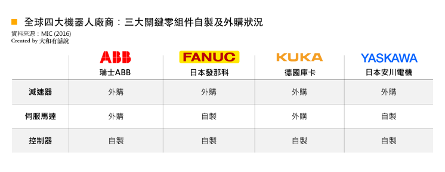
1 單軸機器人 (Single Axis)
多應用於單軸直線移載、精密滾珠螺桿滑台，具備高定位精度與剛性。
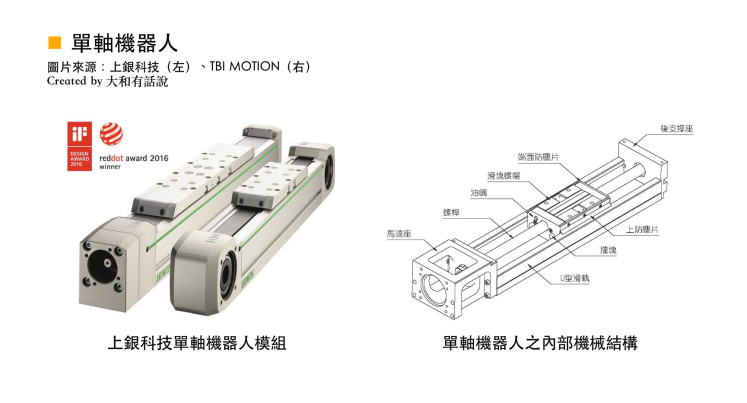
2 直角坐標機器人 (Cartesian)
沿 X、Y、Z 相互正交軸向運動，結構直觀、負載大，常見於大型搬運與點膠機。
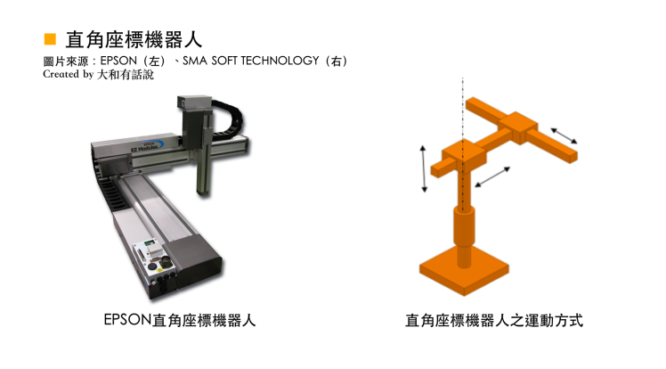
3 水平多關節 (SCARA)
EPSON 王牌水平 X-Y 關節高速運轉，垂直 Z 軸具極高剛性，在 3C 電子插件與裝配市佔第一。
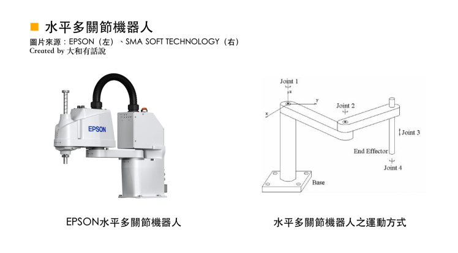
4 並聯機器人 (DELTA)
頂部固定伺服馬達帶動三組連桿平行機構，運動質量極輕，專精輸送帶高速飛拍分揀。
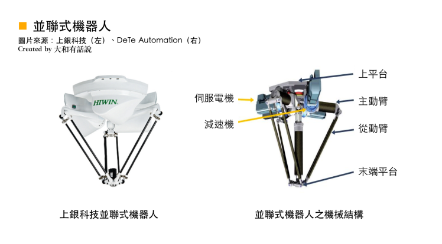
5 垂直多關節 (6 軸)
擬人化六軸自由度（前三軸定位置，後三軸定姿態），能到達空間內任意座標與傾角。
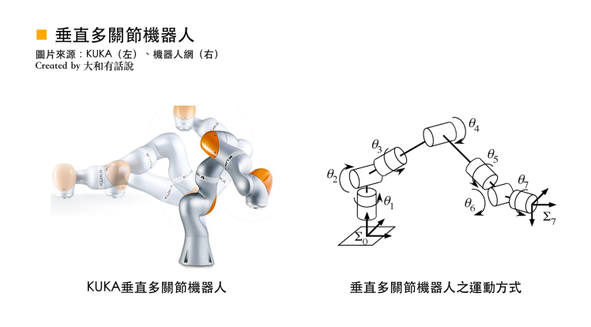
📊 各機構運動自由度對比
直角坐標 (3T)、SCARA (3T1R)、DELTA (3T)、6軸 (3T3R) 之動作半徑與重複定位精度差異。

📐 座標系統架構與外部控制點 ECP (External Control Point)
投影片 01: Slide 15 ~ 22, 81 ~ 86工業機器人四大座標系
- 1. 世界座標 (World)： 機器人底座基準原點，固定於基座幾何中心，右手法則定義 X、Y、Z。
- 2. 本地/工件座標 (Local / User)： 配合夾具、傾斜輸送台建立的客製座標系，便於多工作站平移旋轉。
- 3. 工具座標 (Tool / TCP)： 原點設於末端吸嘴、夾爪或焊槍尖端，姿態變動以此點為中心旋轉。
- 4. 關節座標 (Joint)： 直接控制 $J_1 \sim J_6$ 各軸伺服馬達旋轉角度（度數或脈衝數 Pulses）。
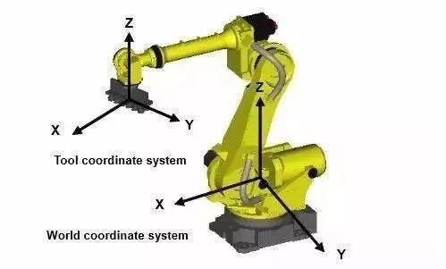
6 軸垂直多關節座標與關節對應
6 軸手臂的世界座標與末端姿態（U, V, W 尤拉角 Euler Angles），各軸關節角度旋轉與空間座標之間的映射關係：
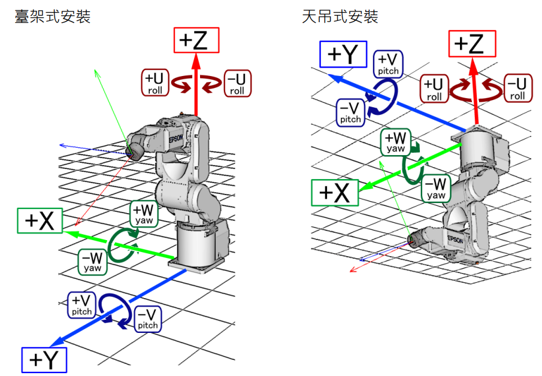
外部控制點 ECP (External Control Point) 異形點膠技術
高階塗膠必備傳統工法為「點膠頭安裝在手臂末端，工件固定在工作台上」；而在 ECP 模式下，點膠針頭或打磨砂輪固定於工作台外部，機械手臂則夾持複雜曲面工件（如車燈罩、手機背蓋），以固定點針尖為切削/塗膠參考基準運動。
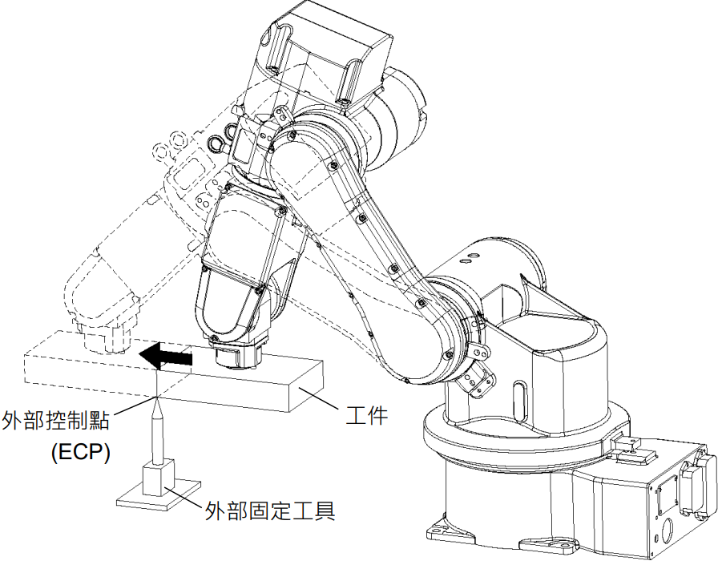
Slide 17: ECP 外部工具固定尖端概念定義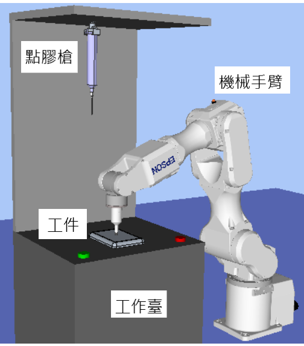
Slide 86: 外部座標參考點移動法 (CAD to Point for ECP)ECP 1, 350.5, 220.0, 150.0, 0, 0, 0 ' 定義 1 號外部點尖端座標
Move P1 /ECP 1 ' 工件沿外部針尖以切線速度直線運動
Arc P2, P3 /ECP 1 ' 工件沿外部針尖精確劃出三維塗膠圓弧
🦾 機械手臂方向姿態 (Arm Orientation Flags)
投影片 01: Slide 45 ~ 50在逆向運動學 (IK) 中，同一個末端空間位置 $(X, Y, Z)$ 通常存在兩組以上的關節解。示教點位時必須明確指定姿態旗標，防止手臂在移載時突然反向折疊而碰撞周圍機架或人員：
/R 右手方向姿態 (Righty)
關節 2 向右凸出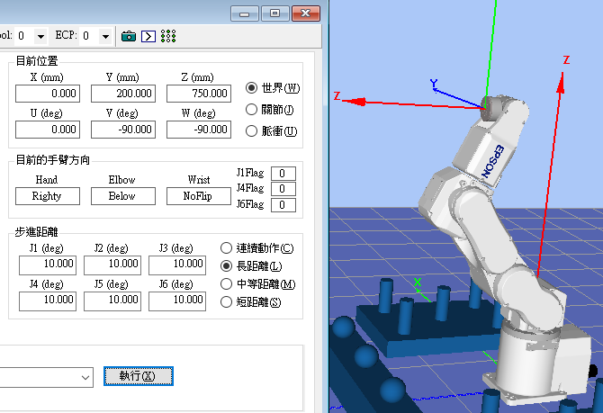
SPEL+ 語法：Go P1 /R。適用於右側空間開闊、左側有立柱或相機支架之工位，關節向右屈折。
/L 左手方向姿態 (Lefty)
關節 2 向左凸出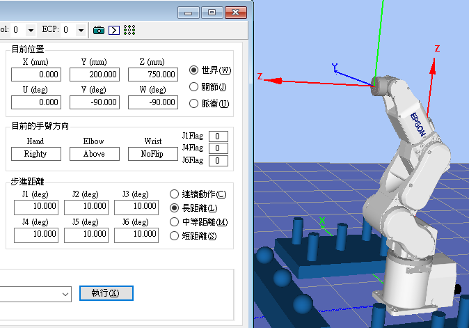
SPEL+ 語法：Go P1 /L。適用於左側開闊、右側有治具干涉之場合，關節向左屈折。
六軸垂直多關節手臂八大姿態旗標
/R (Righty) 或 /L (Lefty)
/A (Above 肘上) 或 /B (Below 肘下)
/NF (NoFlip 翻轉前) 或 /F (Flip 翻轉後)
P1 = XY(400, 250, -50, 0, 90, 0) /R /A /NF
⚠️ 奇異點 (Singularity) 幾何成因、數學原理與工程避障
投影片 01: Slide 56 ~ 64在機器人運動學中，末端線速度與關節角速度滿足：$\dot{\mathbf{x}} = \mathbf{J}(\boldsymbol{\theta})\,\dot{\boldsymbol{\theta}}$。當處於奇異點時，雅可比矩陣行列式 $\det(\mathbf{J}) = 0$，逆矩陣不存在。控制器計算逆運動學時關節速度發散至無窮大（$\dot{\boldsymbol{\theta}} \to \infty$），引發劇烈震動、伺服超載 (Overcurrent) 或保護性急停。
1. 腕關節奇異點
最常見第 4 軸與第 6 軸共線（第 5 軸角度為 $0^\circ$）。末端進行橫向微小旋轉時，4 軸與 6 軸會以極高速度反向瘋狂自轉。
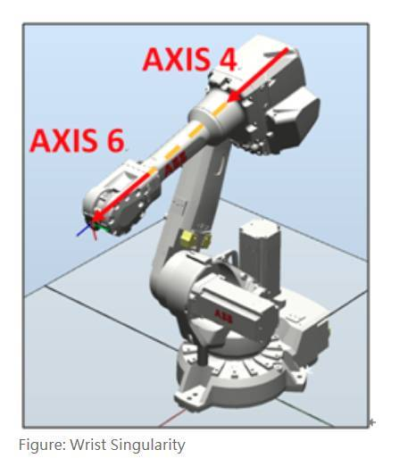
2. 肩關節奇異點
軸線對齊手腕中心點落在第 1 軸旋轉軸線上。此時第 1 軸喪失平面定位自由度，穿過該點的直線插補速度將無限發散。

3. 肘關節奇異點
邊界拉平手臂大臂與小臂完全拉平伸直至最大工作半徑極限，肘關節鎖死，無法向外繼續提供徑向速度。

現場三大避奇異點工程心法 (Slide 63)
- 運動插補切換： 在穿過死區時，將嚴格直線插補
Move改為關節各動各的Go(PTP)。 - 治具預傾斜： 設計末端治具時，預留 5°~15° 傾斜角，避開 J5 軸接近 0° 腕部共線死區。
- 工件擺放微調： 避免將取放目標直接放置於手臂正下方或第 1 軸投影半徑線上。

7 軸冗餘機器手臂 (Redundant Robot)
多出第 7 軸冗餘關節，在保持末端位姿不變的前提下，手臂本體可如蛇形般自由扭動手臂軀幹，完美在狹窄障礙物間穿梭且徹底避開所有奇異點。
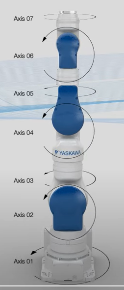
💻 運動命令體系 (PTP vs CP)、軌跡控制與 SPEL+
投影片 01: Slide 69 ~ 77, 95 ~ 97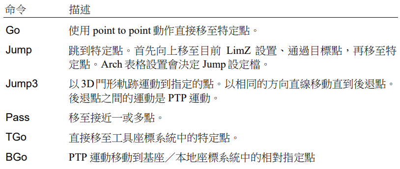
Go P1 / Jump P2

Move P1 (等切線速度直線)
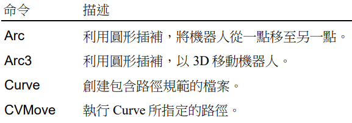
Arc P1, P2 / Curve
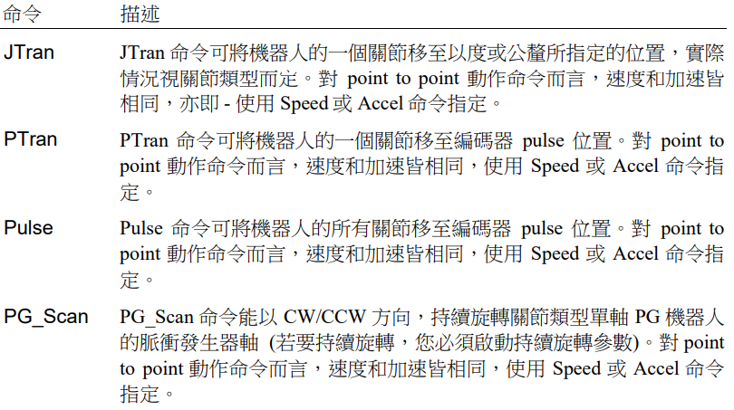
JTran 1, 30 (關節增量)
SPEL+ 程式編輯與執行監控
Slide 76 ~ 77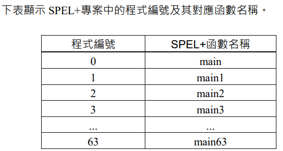
Motor On
Power High
Speed 80; Accel 80, 80
Jump P_Pick ' 門形動作取料
On 1 ' 開啟真空吸嘴
Wait .2
Jump P_Place ' 移至放料點
Off 1 ' 破真空釋放工件
Fend
EPSON RC+ 7.0 3D 模擬器 (Simulator)
Slide 96 ~ 97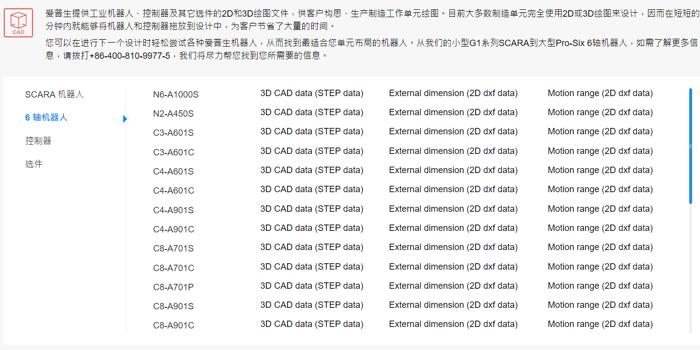
支援在無實體機台環境下進行完整程式離線驗證、干涉碰撞檢查、週期時間 (Cycle Time) 精準估算與點位姿態即時預覽。
📝 投影片重點隨堂自我評量
1. 在 EPSON 手臂中，若要讓夾持工件沿著外部固定工具尖端邊緣進行軌跡運動，應該使用哪一種座標系統或命令參數？
2. 當六軸機械手臂的第 4 軸與第 6 軸共線時，會發生下列哪一種奇異點？
3. 在 SPEL+ 程式中，哪一個命令是用來進行「門形動作」(先上升、平移再下降)的？